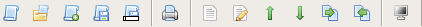

Script Editor Toolbar
In the image below, you can see what the toolbar looks like:

The toolbar buttons are as follows:
New Script
Open Script
Import Script
Save Script
Save Script As
Print
New Segment
Edit Segment
Move Segment Up
Move Segment Down
Copy to Segment Clip
Copy to Script
Show Teleprompter